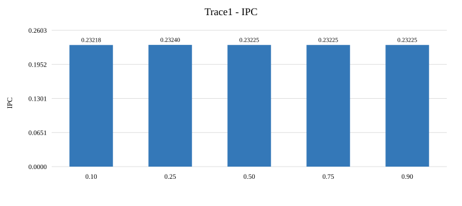
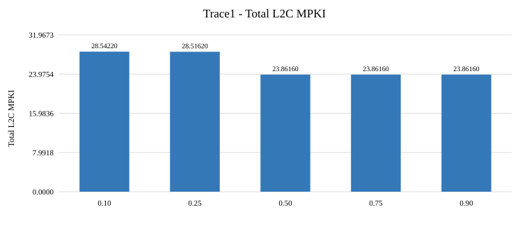
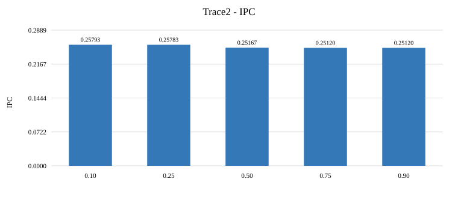
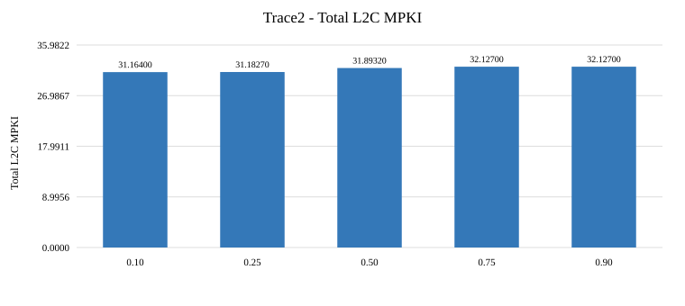
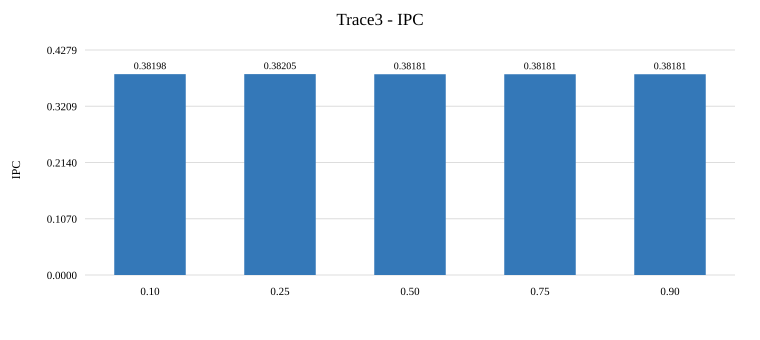
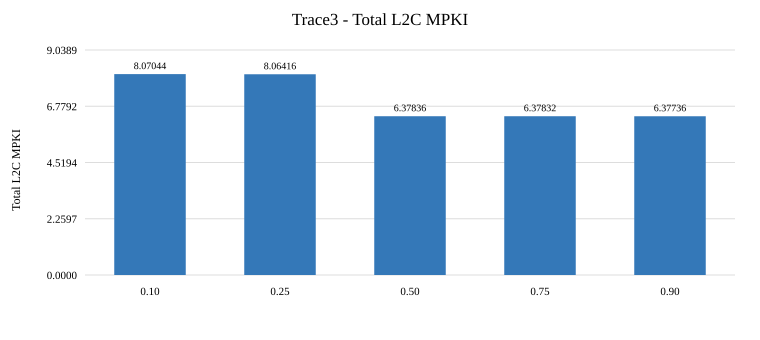

Single-core ChampSim evaluation using Trace1.gz, Trace2.gz and Trace3.gz. Each run uses 25 million warmup instructions and 25 million simulation instructions.
Set dueling: L2 sets 0-15 are fixed SRRIP leaders, sets 16-31 are fixed I-RRIP leaders, and all remaining sets are followers controlled by the selector.
Selector statistic: Counters are updated on accesses to either leader group. Let I_A and I_M be instruction accesses and misses, and A and M be total accesses and misses in leader sets. The score is (I_A + I_M) / (A + M). The selector chooses I-RRIP for followers when the score exceeds the configured threshold; otherwise it chooses SRRIP. The tested thresholds are 0.10, 0.25, 0.50, 0.75 and 0.90.
Insertion and replacement: Hits reset RRPV to 0. Instruction lines are inserted at RRPV 2. Under I-RRIP, data lines are inserted at RRPV 3; otherwise lines are inserted at RRPV 2. Victim selection chooses a line at RRPV 3, incrementing RRPVs when needed.
Measurement: Each trace is evaluated independently with identical warmup and simulation lengths. Speedup is configuration IPC divided by that trace's baseline SRRIP IPC.
| Threshold | IPC | Speedup | Total MPKI | Data-load MPKI | Instruction-load MPKI | Follower policy |
|---|---|---|---|---|---|---|
| baseline | 0.232232 | 1.000000x | 23.79910 | 7.06972 | 10.52550 | SRRIP |
| 0.10 | 0.232178 | 0.999767x | 28.54220 | 8.67768 | 9.66028 | I-RRIP |
| 0.25 | 0.232396 | 1.000706x | 28.51620 | 8.65824 | 9.65660 | I-RRIP |
| 0.50 | 0.232250 | 1.000078x | 23.86160 | 7.09548 | 10.50980 | RRIP |
| 0.75 | 0.232250 | 1.000078x | 23.86160 | 7.09548 | 10.50980 | RRIP |
| 0.90 | 0.232250 | 1.000078x | 23.86160 | 7.09548 | 10.50980 | RRIP |


| Threshold | IPC | Speedup | Total MPKI | Data-load MPKI | Instruction-load MPKI | Follower policy |
|---|---|---|---|---|---|---|
| baseline | 0.251085 | 1.000000x | 32.09980 | 7.99564 | 18.21980 | SRRIP |
| 0.10 | 0.257929 | 1.027258x | 31.16400 | 9.80224 | 11.83680 | I-RRIP |
| 0.25 | 0.257830 | 1.026863x | 31.18270 | 9.80504 | 11.85890 | I-RRIP |
| 0.50 | 0.251670 | 1.002330x | 31.89320 | 8.00920 | 17.94300 | RRIP |
| 0.75 | 0.251202 | 1.000466x | 32.12700 | 8.02352 | 18.16160 | RRIP |
| 0.90 | 0.251202 | 1.000466x | 32.12700 | 8.02352 | 18.16160 | RRIP |


| Threshold | IPC | Speedup | Total MPKI | Data-load MPKI | Instruction-load MPKI | Follower policy |
|---|---|---|---|---|---|---|
| baseline | 0.381789 | 1.000000x | 6.34360 | 2.84660 | 1.19336 | SRRIP |
| 0.10 | 0.381975 | 1.000487x | 8.07044 | 3.06984 | 0.95636 | I-RRIP |
| 0.25 | 0.382055 | 1.000697x | 8.06416 | 3.06912 | 0.95468 | I-RRIP |
| 0.50 | 0.381808 | 1.000050x | 6.37836 | 2.85188 | 1.18996 | RRIP |
| 0.75 | 0.381808 | 1.000050x | 6.37832 | 2.85188 | 1.18996 | RRIP |
| 0.90 | 0.381805 | 1.000042x | 6.37736 | 2.85140 | 1.18952 | RRIP |


Trace1: Baseline IPC is 0.232232. The highest measured IPC is 0.232396 at threshold 0.25 (+0.071% versus baseline). Total MPKI changes from 23.7991 to 28.5162. These results show that the effect of the threshold depends on the workload.
Trace2: Baseline IPC is 0.251085. The highest measured IPC is 0.257929 at threshold 0.10 (+2.726% versus baseline). Total MPKI changes from 32.0998 to 31.1640. These results show that the effect of the threshold depends on the workload.
Trace3: Baseline IPC is 0.381789. The highest measured IPC is 0.382055 at threshold 0.25 (+0.070% versus baseline). Total MPKI changes from 6.3436 to 8.0642. These results show that the effect of the threshold depends on the workload.